Part 12: Electromagnetic Induction and Alternating Current
1. Faraday's Law of Electromagnetic Induction
$$ \mathcal{E} = -\frac{d\Phi}{dt} = -\frac{d}{dt} \int \vec{B} \cdot d\vec{S} $$The direction is determined by the right-hand rule applied to the direction of $\Phi$.
If $\Phi$ increases over time, the induced EMF opposes the direction of $\Phi$; conversely, it aligns with $\Phi$.
① Motional EMF:
$$ |\mathcal{E}| = \frac{d\Phi}{dt} = \frac{d}{dt} (B l x) = B l v $$For a general conductor: $\mathcal{E}_{ab} = \int_a^b (\vec{v} \times \vec{B}) \cdot d\vec{l}$.
② Induced EMF:
$$ |\mathcal{E}| = \oint \vec{E} \cdot d\vec{l} = \oint (\vec{E}_{\text{ind}} + \vec{E}_{\text{es}}) \cdot d\vec{l} = \oint \vec{E}_{\text{ind}} \cdot d\vec{l} + \oint \vec{E}_{\text{es}} \cdot d\vec{l} = \oint \vec{E}_{\text{ind}} \cdot d\vec{l} $$ $$ \therefore \oint \vec{E}_{\text{ind}} \cdot d\vec{l} = -\frac{d}{dt} \int \vec{B} \cdot d\vec{S} = -\int \frac{\partial \vec{B}}{\partial t} \cdot d\vec{S} $$2. Typical Examples
① Conductor Rod with Initial Velocity $v_0$:

② Rotating Disk:

③ Rotating Rod:


④ Induced EMF of a Wire Ring:

⑤ Loop Spanning Across Magnetic Field Regions:


⑥ Superconducting Coil Entering a Magnetic Field (Self-inductance $L$):

Continuing the analysis of the superconducting coil entering the magnetic field:
- If $v_0 < \frac{B a b}{\sqrt{m L}}$, the coil returns after completing half a period of simple harmonic motion.
- If $v_0 = \frac{B a b}{\sqrt{m L}}$, the coil comes to rest exactly after completing half a period of simple harmonic motion.
- If $v_0 > \frac{B a b}{\sqrt{m L}}$, the coil continues to move forward at a constant speed before completing half a period. $$ \frac{1}{2} m v_0^2 = \frac{1}{2} \frac{B^2 a^2}{L} b^2 + \frac{1}{2} m v^2 \implies v = \sqrt{v_0^2 - \frac{B^2 a^2 b^2}{m L}} $$
⑦ Simplified Model of a Maglev Train:
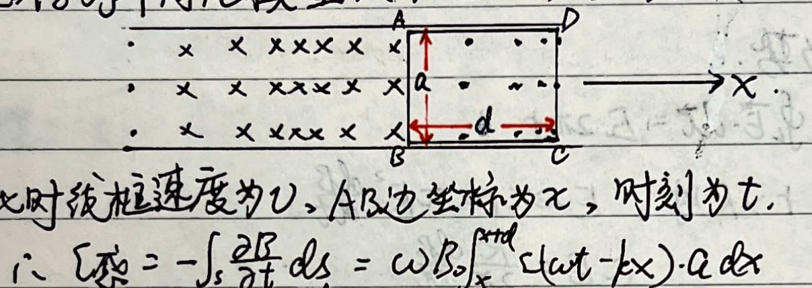
Assume the track's magnetic field is $B = B_0 \cos(\omega t - k x)$.
Let the rectangular loop ABCD move to the right at velocity $v$. Let the coordinate of side AB be $x$ at time $t$.
$$ \mathcal{E}_{\text{ind}} = -\int_S \frac{\partial B}{\partial t} dS = \omega B_0 \int_x^{x+d} \sin(\omega t - k x) \cdot a dx = \frac{\omega B_0 a}{k} \left[ \cos(\omega t - k(x+d)) - \cos(\omega t - k x) \right] $$ $$ \mathcal{E}_{\text{mot}} = [B(x, t) - B(x+d, t)] a v = B_0 a v \left[ \cos(\omega t - k x) - \cos(\omega t - k(x+d)) \right] $$ $$ \therefore \mathcal{E}_{\text{total}} = \mathcal{E}_{\text{ind}} + \mathcal{E}_{\text{mot}} = -\left(\frac{B_0 \omega a}{k} - B_0 a v\right) \left[ \cos(\omega t - k x) - \cos(\omega t - k(x+d)) \right] $$ $$ F_{\text{total}} = [B(x+d, t) - B(x, t)] I \cdot a = -B_0 \left[ \cos(\omega t - k(x+d)) - \cos(\omega t - k x) \right] \frac{\mathcal{E}_{\text{total}}}{R} a $$ $$ = \frac{B_0^2 a^2 \left(\frac{\omega}{k} - v\right)}{R} \left[ \cos(\omega t - k x) - \cos(\omega t - k(x+d)) \right]^2 $$Using the sum-to-product formula, we get:
$$ F = \left[ \frac{4 B_0^2 a^2 \left(\frac{\omega}{k} - v\right)}{R} \sin^2\left(\frac{k d}{2}\right) \right] \sin^2\left(\omega t - k x - \frac{k d}{2}\right) = F_0 \sin^2\left(\omega t - k x - \frac{k d}{2}\right) $$- When $k d = 2 n \pi$, $(F_0)_{\text{min}} = 0$.
- When $k d = (2 n + 1) \pi$, $(F_0)_{\text{max}} = \frac{4 B_0^2 a^2 \left(\frac{\omega}{k} - v\right)}{R}$.
- For other values of $d$, $F_0 \in \left(0, \frac{4 B_0^2 a^2 \left(\frac{\omega}{k} - v\right)}{R}\right)$.
3. Alternating Current (AC)
① AC Generator Model:
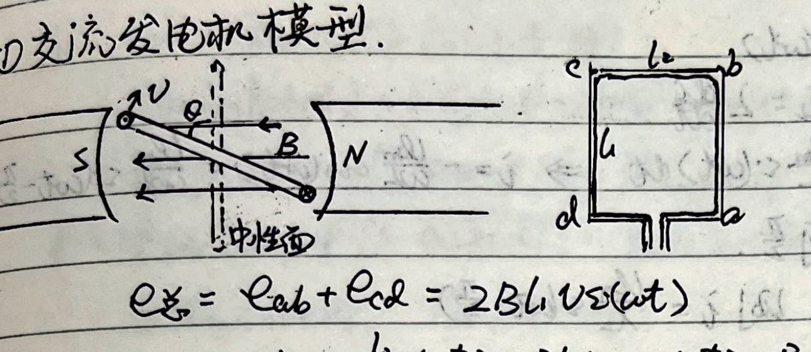
$$ e_{\text{total}} = e_{ab} + e_{cd} = 2 B L_1 v \sin(\omega t) = 2 B L_1 \cdot \omega \frac{L_2}{2} \sin(\omega t) $$ $$ = B L_1 L_2 \omega \sin(\omega t) = B S \omega \sin(\omega t) = \Phi_m \omega \sin(\omega t) = \mathcal{E}_m \sin(\omega t) $$For an $n$-turn coil: $e = n B S \omega \sin(\omega t)$.
DC Generator Model:
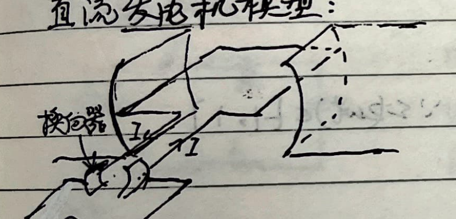
② Effective Value of AC (RMS):
Defined as the equivalent heat generated by a constant DC over one period.
$$ I_{\text{eff}}^2 R T = R \int_0^T i^2 dt = R I_m^2 \int_0^T \sin^2(\omega t) dt $$ $$ I_{\text{eff}}^2 T = \frac{I_m^2}{\omega} \int_0^{\omega T} \sin^2(\omega t) d(\omega t) = \frac{I_m^2}{2 \omega} \left[ \omega T - \frac{1}{2} \sin(2\omega T) \right] $$Since $T = \frac{2\pi}{\omega}$, $\sin(2\omega T) = \sin 4\pi = 0$.
$$ \therefore I_{\text{eff}}^2 T = \frac{I_m^2}{2 \omega} \cdot \omega T = \frac{1}{2} I_m^2 T \implies I_{\text{eff}} = \frac{I_m}{\sqrt{2}} $$③ Pure Resistive Circuit:
- Instantaneous Voltage: $u = U_m \sin(\omega t)$.
- Instantaneous Current: $i = \frac{U_m}{R} \sin(\omega t)$.
- Phase Difference: $u$ and $i$ are in phase.
- Instantaneous Power: $P = u i = U_m I_m \sin^2(\omega t) = \frac{U_m I_m}{2} [1 - \cos(2\omega t)] = U_{\text{eff}} I_{\text{eff}} [1 - \cos(2\omega t)]$.
- Average Power: $\bar{P} = U_{\text{eff}} I_{\text{eff}} \overline{[1 - \cos(2\omega t)]}$. Since $\overline{\cos(2\omega t)} = 0$, $\bar{P} = U_{\text{eff}} I_{\text{eff}}$.
④ Pure Inductive Circuit:
- Instantaneous Voltage: $u_L = U_m \sin(\omega t)$.
- Instantaneous Current: Since $u_L = -\mathcal{E}_L = L \frac{di}{dt}$: $$ di = \frac{U_m}{L} \sin(\omega t) dt \implies i = -\frac{U_m}{\omega L} \cos(\omega t) = \frac{U_m}{\omega L} \sin\left(\omega t - \frac{\pi}{2}\right) $$
- Phase Difference: $u_L$ leads $i$ by $\pi/2$.
- Inductive Reactance ($X_L$): Let $X_L = \omega L = 2\pi f L$. Then $i = \frac{U_m}{X_L} \sin\left(\omega t - \frac{\pi}{2}\right)$.
- Instantaneous Power: $P = u_L i = -U_m I_m \sin(\omega t)\cos(\omega t) = -\frac{1}{2} U_m I_m \sin(2\omega t) = -U_{\text{eff}} I_{\text{eff}} \sin(2\omega t)$.
- Average Power: $\bar{P} = -U_{\text{eff}} I_{\text{eff}} \overline{\sin(2\omega t)} = 0$.
⑤ Pure Capacitive Circuit:
- Instantaneous Voltage: $u_C = U_m \sin(\omega t)$.
- Instantaneous Current: Since $dq = C du_C$: $$ i = \frac{dq}{dt} = C \frac{du_C}{dt} = C \omega U_m \cos(\omega t) = C \omega U_m \sin\left(\omega t + \frac{\pi}{2}\right) $$
- Phase Difference: $i$ leads $u_C$ by $\pi/2$.
- Capacitive Reactance ($X_C$): Let $X_C = \frac{1}{C\omega} = \frac{1}{2\pi f C}$. Then $i = \frac{U_m}{X_C} \sin\left(\omega t + \frac{\pi}{2}\right)$.
- Instantaneous Power: $P = u_C i = U_m I_m \sin(\omega t)\cos(\omega t) = \frac{1}{2} U_m I_m \sin(2\omega t) = U_{\text{eff}} I_{\text{eff}} \sin(2\omega t)$.
- Average Power: $\bar{P} = \frac{1}{T} \int_0^T P dt = 0$.
⑥ AC Power (General Case):
Suppose $u$ leads $i$ by $\varphi$.
$$ P = u i = U_m \sin(\omega t) \cdot I_m \sin(\omega t - \varphi) $$ $$ = U_m I_m [\sin(\omega t) \cdot \sin(\omega t)\cos\varphi - \sin(\omega t)\cos(\omega t)\sin\varphi] $$ $$ = U_m I_m \cos\varphi \cdot \frac{1}{2}[1 - \cos(2\omega t)] - U_m I_m \sin\varphi \cdot \frac{1}{2}\sin(2\omega t) $$Taking the time average over a period:
$$ \bar{P} = \frac{1}{2} U_m I_m \cos\varphi \overline{[1 - \cos(2\omega t)]} - \frac{1}{2} U_m I_m \sin\varphi \overline{\sin(2\omega t)} $$ $$ \therefore \bar{P} = \frac{1}{2} U_m I_m \cos\varphi = U_{\text{eff}} I_{\text{eff}} \cos\varphi $$⑦ Impedance ($Z$):
1) RLC Series Circuit:
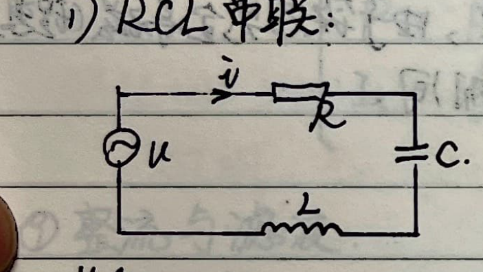
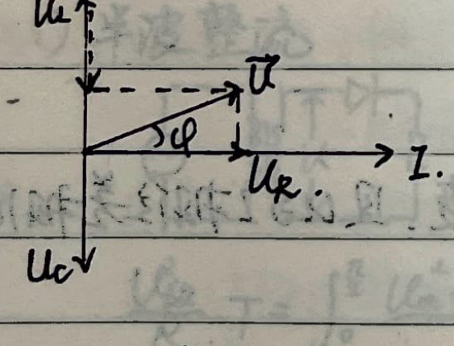
2) RLC Parallel Circuit:
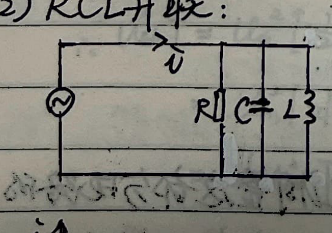
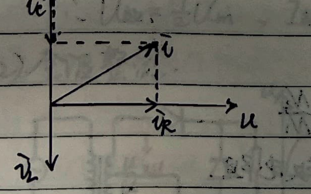
3) Series Resonance:
$$ \varphi = \arctan \frac{U_L - U_C}{U_R} = \arctan \frac{\omega L - \frac{1}{\omega C}}{R} $$When $\omega L - \frac{1}{\omega C} = 0$, i.e., $\omega = \frac{1}{\sqrt{LC}}$, series resonance occurs.
4) Parallel Resonance:
$$ \varphi = \arctan \frac{I_C - I_L}{I_R} = \arctan \frac{\omega C - \frac{1}{\omega L}}{1/R} $$When $\omega C - \frac{1}{\omega L} = 0$, i.e., $\omega = \frac{1}{\sqrt{LC}}$, parallel resonance occurs.
⑧ Transformer:
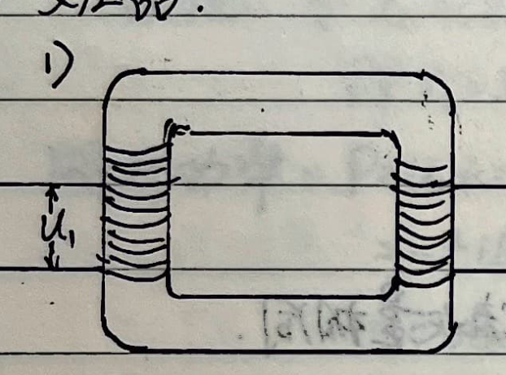
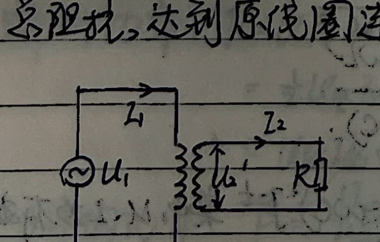
⑨ Power Transmission:
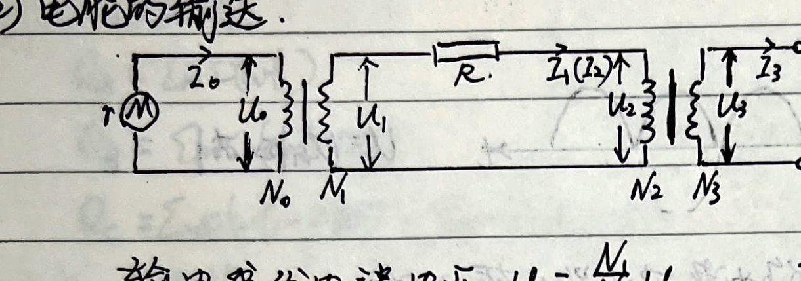
Consider a transmission system: Generator ($U_0$, $P_0$) $\rightarrow$ Step-up Transformer ($N_0, N_1$) $\rightarrow$ Transmission Line ($R$) $\rightarrow$ Step-down Transformer ($N_2, N_3$) $\rightarrow$ Load.
- Generator output current: $I_0 = \frac{P_0}{U_0}$.
- Voltage at start of transmission line: $U_1 = \frac{N_1}{N_0} U_0$. Current: $I_1 = \frac{N_0}{N_1} I_0$.
- Voltage loss on transmission line: $U_{\text{loss}} = I_1 R$. Power loss: $P_{\text{loss}} = I_1^2 R$.
- Voltage at user end of transmission line: $U_2 = U_1 - U_{\text{loss}} = \frac{N_1}{N_0} U_0 - \frac{N_0}{N_1} I_0 R$. Current: $I_2 = I_1$.
- User network voltage: $U_3 = \frac{N_3}{N_2} U_2 = \frac{N_3 N_1}{N_2 N_0} U_0 - \frac{N_3 N_0}{N_2 N_1} I_0 R$.
- User power: $P = P_0 - P_{\text{loss}} = P_0 - \left(\frac{N_0}{N_1}\right)^2 I_0^2 R$.
- User current: $I_3 = \frac{P}{U_3} = \frac{P_0 - \left(\frac{N_0}{N_1}\right)^2 I_0^2 R}{\frac{N_3 N_1}{N_2 N_0} \left[ U_0 - \left(\frac{N_0}{N_1}\right)^2 I_0 R \right]}$.
⑩ Rectification and Filtering:
1) Half-Wave Rectification:
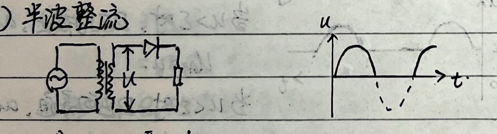
To find the effective voltage over one full period $T$:
$$ \frac{U_{\text{eff}}^2}{R} T = \int_0^{T/2} \frac{U_m^2 \sin^2(\omega t)}{R} dt $$ $$ \therefore U_{\text{eff}}^2 T = U_m^2 \left[ \frac{1}{2} \int_0^{T/2} dt - \frac{1}{2} \int_0^{T/2} \cos(2\omega t) dt \right] = U_m^2 \left[ \frac{1}{4} T - \frac{1}{4\omega} \int_0^{T/2} \cos(2\omega t) d(2\omega t) \right] = \frac{1}{4} U_m^2 T $$ $$ \therefore U_{\text{eff}} = \frac{1}{2} U_m, \quad I_{\text{eff}} = \frac{1}{2} I_m $$2) Full-Wave Rectification:
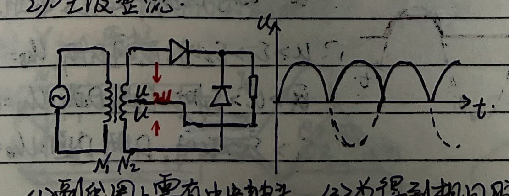
The effective values are the same as unrectified AC:
$$ U_{\text{eff}} = \frac{U_m}{\sqrt{2}}, \quad I_{\text{eff}} = \frac{I_m}{\sqrt{2}} $$- The secondary coil requires a center tap.
- To obtain the same pulsating voltage amplitude $U_m$, the diodes must be able to withstand a reverse voltage of $2 U_m$.
3) Bridge Rectification:
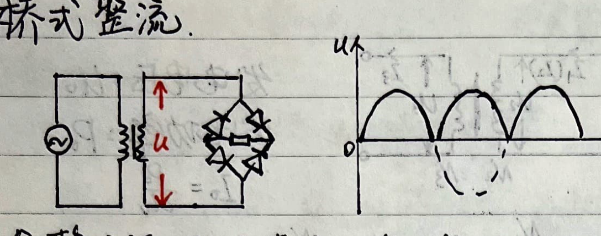
$$ u = U_m |\sin(\omega t)| $$4) Filtering Circuits:
The pulsating DC after rectification is used as the input voltage for filtering circuits.
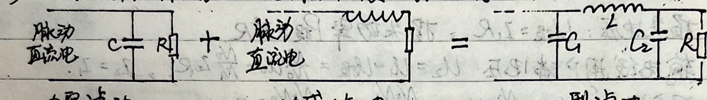
- Capacitor Filter: $X_C = \frac{1}{2\pi f C}$. Passes AC, blocks DC. Passes high frequencies, blocks low frequencies.
- Inductor Filter: $X_L = 2\pi f L$. Passes DC, blocks AC. Passes low frequencies, blocks high frequencies.
- $\pi$-Type Filter: Combination of capacitors and inductors for smoother DC output.
5) Filtering Circuits with Diodes and DC Sources:
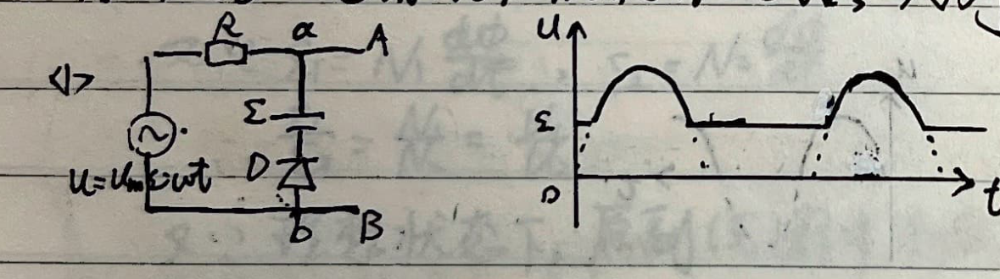
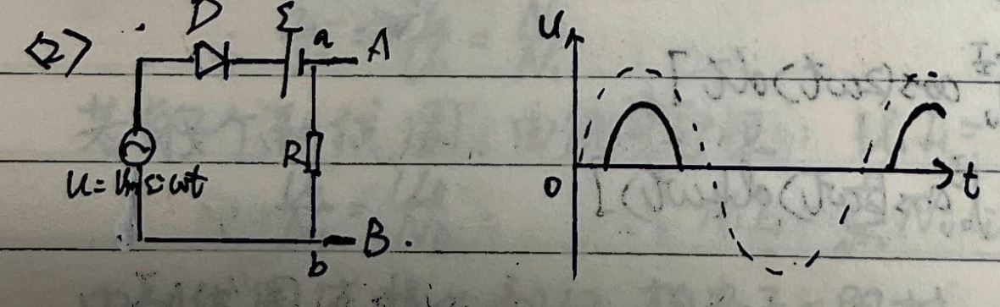
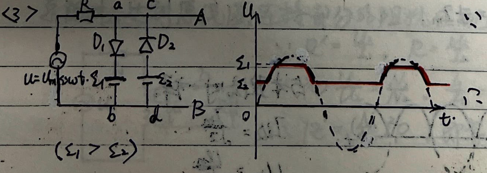
4. Three-Phase Alternating Current
A three-phase generator produces three alternating EMFs with equal amplitudes and a $120^\circ$ phase difference:
$$ e_A = \mathcal{E}_m \sin(\omega t) $$ $$ e_B = \mathcal{E}_m \sin(\omega t - 120^\circ) $$ $$ e_C = \mathcal{E}_m \sin(\omega t - 240^\circ) = \mathcal{E}_m \sin(\omega t + 120^\circ) $$1) Y-Y Connection:
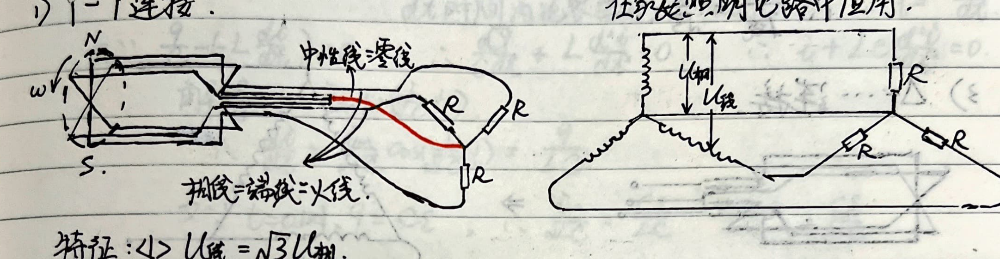
Characteristic 1: Line voltage $U_{\text{line}} = \sqrt{3} U_{\text{phase}}$.
Proof:
$$ e_A - e_B = \mathcal{E}_m [\sin(\omega t) - \sin(\omega t - 120^\circ)] = \mathcal{E}_m \left[ \sin(\omega t) - \sin(\omega t)\cos 120^\circ + \cos(\omega t)\sin 120^\circ \right] $$ $$ = \mathcal{E}_m \left[ \sin(\omega t) + \frac{1}{2}\sin(\omega t) + \frac{\sqrt{3}}{2}\cos(\omega t) \right] = \sqrt{3}\mathcal{E}_m \left[ \frac{\sqrt{3}}{2}\sin(\omega t) + \frac{1}{2}\cos(\omega t) \right] = \sqrt{3} \mathcal{E}_m \sin(\omega t + 30^\circ) $$Since the effective value of $e_A - e_B$ is the line voltage $U_{\text{line}}$, we have $U_{\text{line}} = \sqrt{3} U_{\text{phase}}$.
Characteristic 2: The voltage in the neutral line is 0.
Proof:
$$ U_{\text{neutral}} = \mathcal{E}_m [\sin(\omega t) + \sin(\omega t + 120^\circ) + \sin(\omega t - 120^\circ)] $$ $$ = \mathcal{E}_m \left[ \sin(\omega t) + \sin(\omega t)\cos 120^\circ + \cos(\omega t)\sin 120^\circ + \sin(\omega t)\cos 120^\circ - \cos(\omega t)\sin 120^\circ \right] $$ $$ = \mathcal{E}_m \left[ \sin(\omega t) - \frac{1}{2}\sin(\omega t) + \frac{\sqrt{3}}{2}\cos(\omega t) - \frac{1}{2}\sin(\omega t) - \frac{\sqrt{3}}{2}\cos(\omega t) \right] = 0 $$Therefore, under symmetrical load conditions, the current in the neutral line is zero.
2) Y-$\Delta$ Connection:
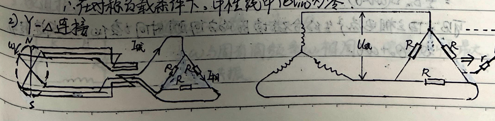
Characteristic: Line current $I_{\text{line}} = \sqrt{3} I_{\text{phase}}$.
Proof using Y-$\Delta$ transform for the load: The equivalent Y-resistance is $r = \frac{R^2}{R+R+R} = \frac{R}{3}$.
$$ I_{\text{phase}(\Delta)} = \frac{U_{\text{line}}}{R} = \frac{U_{\text{line}}}{3r} $$ $$ I_{\text{line}} = \frac{U_{\text{phase}(Y)}}{r} = \frac{U_{\text{line}}/\sqrt{3}}{r} $$ $$ \therefore \frac{I_{\text{phase}(\Delta)}}{I_{\text{line}}} = \frac{1}{\sqrt{3}} \implies I_{\text{line}} = \sqrt{3} I_{\text{phase}(\Delta)} $$3) $\Delta$ Connection:
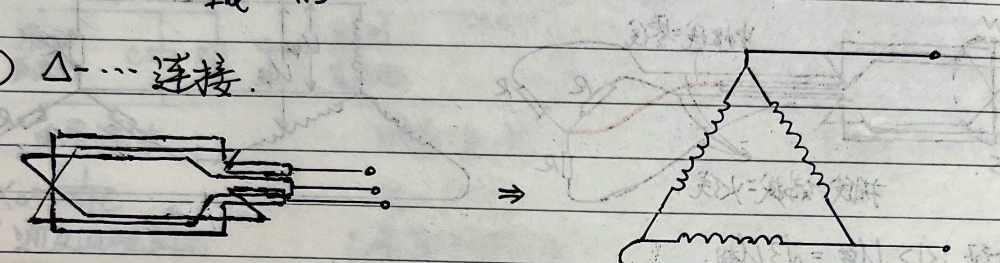
Characteristic: $U_{\text{phase}} = U_{\text{line}}$.
4) Rotating Magnetic Field of a Three-Phase Induction Motor:
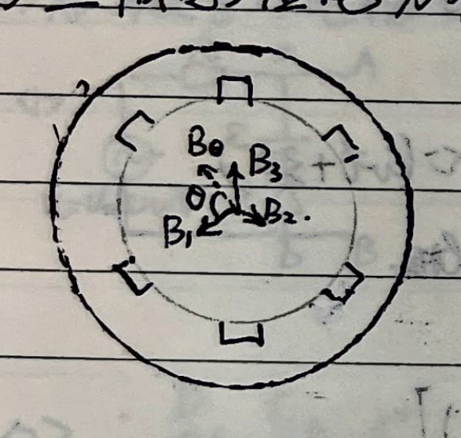
In the direction at an angle $\theta$ relative to $B_1$, the resultant magnetic field is:
$$ B_\theta = B_1 \cos\theta + B_2 \cos\left(\theta + \frac{2}{3}\pi\right) + B_3 \cos\left(\theta - \frac{2}{3}\pi\right) $$ $$ = B_m \left[ \sin(\omega t)\cos\theta + \sin\left(\omega t + \frac{2}{3}\pi\right)\cos\left(\theta + \frac{2}{3}\pi\right) + \sin\left(\omega t - \frac{2}{3}\pi\right)\cos\left(\theta - \frac{2}{3}\pi\right) \right] $$Using the product-to-sum formula ($2\sin A\cos B = \sin(A+B) + \sin(A-B)$):
$$ B_\theta = \frac{1}{2} B_m \left[ \sin(\omega t + \theta) + \sin(\omega t - \theta) + \sin\left(\omega t + \theta + \frac{4}{3}\pi\right) + \sin(\omega t - \theta) + \sin\left(\omega t + \theta - \frac{4}{3}\pi\right) + \sin(\omega t - \theta) \right] $$ $$ = \frac{1}{2} B_m \left[ 3\sin(\omega t - \theta) + \sin(\omega t + \theta) - \frac{1}{2}\sin(\omega t + \theta) - \frac{\sqrt{3}}{2}\cos(\omega t + \theta) - \frac{1}{2}\sin(\omega t + \theta) + \frac{\sqrt{3}}{2}\cos(\omega t + \theta) \right] $$ $$ = \frac{3}{2} B_m \sin(\omega t - \theta) $$This shows that the direction of the resultant magnetic field $B_\theta$ produced by the three-phase current rotates uniformly at $\omega$ with time $t$, where $\theta = \theta_0 + \omega t$.
Special Topic: Self-Inductance of Two Parallel Wires
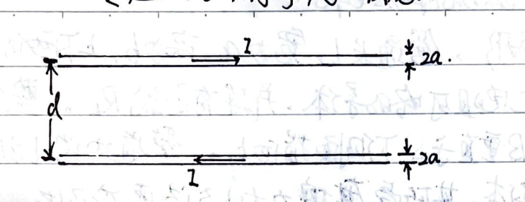
1. Self-inductance coefficient per unit length.
$$ \Phi_1 = \Phi_2 = \int_a^{d-a} \frac{\mu_0 I}{2\pi r} l \cdot dr = \frac{\mu_0 I l}{2\pi} \ln \frac{d-a}{a} $$ $$ \therefore \Phi_{\text{total}} = \Phi_1 + \Phi_2 = \frac{\mu_0 I l}{\pi} \ln \frac{d-a}{a} $$ $$ \therefore \text{Self-inductance coefficient per unit length } L = \frac{\Phi_{\text{total}}}{I \cdot l} = \frac{\mu_0}{\pi} \ln \frac{d-a}{a} $$2. Work done to slowly pull the two parallel wires apart to a distance $d'$.
Assume the top wire is stationary, and the bottom wire translates. The Ampere force on a segment of length $l$ of the bottom wire is $F = I B l$.
$$ \therefore W = \int_d^{d'} \frac{\mu_0 I}{2\pi r} I l dr = \frac{\mu_0 I^2 l}{2\pi} \ln \frac{d'}{d} $$$\therefore$ Work done per unit length by the magnetic force is $\frac{\mu_0 I^2}{2\pi} \ln \frac{d'}{d}$.
3. Relationship of energy change when increasing the distance:
During the movement, ensure $I$ is unchanged. Because $L$ changes, a self-induced EMF is generated:
$$ \mathcal{E} = -\frac{d\Phi}{dt} = -I\frac{dL}{dt} $$ $$ \therefore W_{\text{source}} = -\int_0^t \mathcal{E} I dt = \int_d^{d'} I^2 dL = I^2(L' - L) $$ $$ = W_{\text{magnetic}} + W_{\text{mechanical}} $$And $W_{\text{magnetic}} = \frac{1}{2}(L' - L)I^2$.
$$ \therefore W_{\text{mechanical}} = \frac{1}{2}(L' - L)I^2 = \frac{\mu_0 I^2}{2\pi} \ln \frac{d'-a}{d-a} \approx \frac{\mu_0 I^2}{2\pi} \ln \frac{d'}{d} $$It can be seen that the work used to increase the self-inductance magnetic energy is equal to the work done against the magnetic force acting on the wire. Half of the work in this case is the work done against the resistance to maintain a constant kinetic energy.